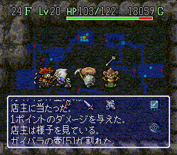

风来的西林SFC ～秘密写真馆～
◆ 挂轴洞窟的血战！店主VSガイバラ！！！◆
出现条件：
挂轴洞窟22F以上，若ガイバラ出现地点在商店内，并且使用あかりの卷物看到ンドゥバ的形态之后，便有33.3%几率发生以下隐藏事件。
店主
「いらっしゃいませ！」
ガイバラ
「俺到底是谁啊，为什么会在这里？你又是谁呀？」
西林
「Let me tell you，你就是英俊潇洒风流倜傥玉树临风人见人爱威震风来界的东方不败呀，久闻大侠英名如雷贯耳，其实我仰慕你很久了……今日一见果然见面不如闻名，失敬失敬。哦，你后边那位看起来很样衰的就是你的师父西方失败了。」
ガイバラ
「哇靠，果然很样衰的样子，还学人家戴个中分假发，这么out，什么品味？！他是我的师父？打死你我也不信。」
ンドゥバ
「……」
ガイバラ
「越看越像个怪物，小子吃我一壶！」（ガイバラ扔出ガイバラの壶）
店主
「哎，看你一把年纪又失忆了我才收留你在这里，你别乱发狂啊，再扔我就翻脸了！」
ガイバラ
「我扔，我扔，扔死你这个怪物！你吹得我胀吗，你敢咬我？」
店主
「喔，你应该有好几个月没洗澡了吧，你这么脏我怎么敢咬你呢？要咬也会派我的狗仔队来咬你呀，不过今天算你运气好，我的狗仔队刚好出差去偷拍滨崎步的私生活了，既然这样就让你见识一下我的厉害，少林正宗秘传绝学――绝灭铁头顶！」
ガイバラ
（怒MAX）
「呜嗷嗷嗷，你竟敢打我，我今天就跟你拼了！必杀之壶――暴风冥灭壶！」
店主
（怒MAX）
「喔哦哦哦，谁怕谁，今天不是你死就是你亡，看招，铁头顶第九重――寒冰烈火顶！」

ンドゥバ
「各位观众大家好，我是任天堂西林电视台的特派记者，现在大家看到的是店主VSガイバラ的超魄力现场直播。我们凭着高度的敬业精神将生死置之度外，在这么近的距离拍摄完全是为了让大家能有身临其境的感觉。啊，站在我身边全身贯注观战的这位风来人就是鼎鼎有名的西林大侠了，现在让我们从大侠的角度来感受一下这场战斗。すみません，西林大侠，你能为观众们描述一下现场的情况是怎样的吗？」
西林
「No problem，现在大家都看到了现场的战斗是异常激烈的，店主和ガイバラ前辈都施展浑身解数，各出奇招，现场弥漫的杀气几乎让人窒息，让我们充分领略了其强悍的一面。风来界两大高手对撼，谁胜谁负一时还很难定论，个人认为店主应该会略胜一筹，因为ガイバラ还没有练成葵花宝典的说……这场战斗让我们能够更加深入地了解店主的实力和潜在能力，对分析研究抢劫成功率的研究工作者来说具有很大的意义。作为一个风来人，我为能亲眼目睹这场伟大的战斗而感到荣幸，同时也希望各位风来人多加努力，早日练成传说中的风来神功。」
ンドゥバ
「感谢西林大侠为我们作出这么精彩的分析报道，下面是广告时间，广告之后请大家继续收看本台的独家报道，千万不要走开哦！」
广告：菲玲精油沐浴乳――让你失控的Feeling……
一场惊天地泣鬼神的死斗之后，ガイバラ被打得烟消云散……
店主
「哇哈哈哈，我可不是浪得虚名之徒，一把老骨头，这样的三脚猫功夫也想跟我斗，回去再练100光年吧！」
西林
「光年……（暴汗）！」
冤魂ガイバラ
「哼，看你牛到几时！我会永远记住这次耻辱的，等我回去练成葵花宝典再来找你算帐！」
ンドゥバ
（对冤魂ガイバラ祷告）
「当你发觉这是一个悲剧的时候，已经too late了……为了表示对你的敬意，我们任天堂西林电视台全体工作人员将为你默哀3分钟……恭祝你福寿与天齐，庆贺你死辰快乐，愿GOD保佑你，阿门！」
［返回写真馆］